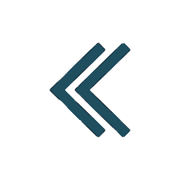

<mat-sidenav-container class="nav-container">
  <mat-sidenav #sidenav mode="side" [(opened)]="opened" class="nav-menu">
    <div class="content-menu">
     <a class="position-menu neumorphic neumorphic--pressed" (click)="getCurrentUrl()" routerLinkActive="active"
        [routerLink]="['/application']" [ngClass]="'application' === url ? 'position-menu-clicked' : ''">
       
       <h2 class="text-menu">Start</h2>
     </a>
      <a class="position-menu neumorphic neumorphic--pressed" (click)="getCurrentUrl()" routerLinkActive="active"
         [routerLink]="['/workers']" [ngClass]="'workers' === url ? 'position-menu-clicked' : ''">
        
        <h2 class="text-menu">Pracownicy</h2>
      </a>
      <a class="position-menu neumorphic neumorphic--pressed">
        
        <h2 class="text-menu">Działy</h2>
      </a>
      <a class="position-menu neumorphic neumorphic--pressed">
        
        <h2 class="text-menu">Święta</h2>
      </a>
      <a class="position-menu neumorphic neumorphic--pressed">
        
        <h2 class="text-menu">Admin</h2>
      </a>
    </div>
    
  </mat-sidenav>

  <mat-sidenav-content class="button-arrow">
    
  </mat-sidenav-content>
</mat-sidenav-container>
